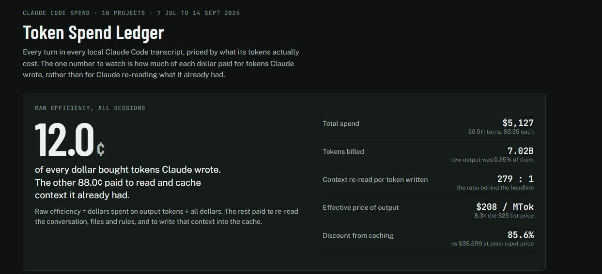
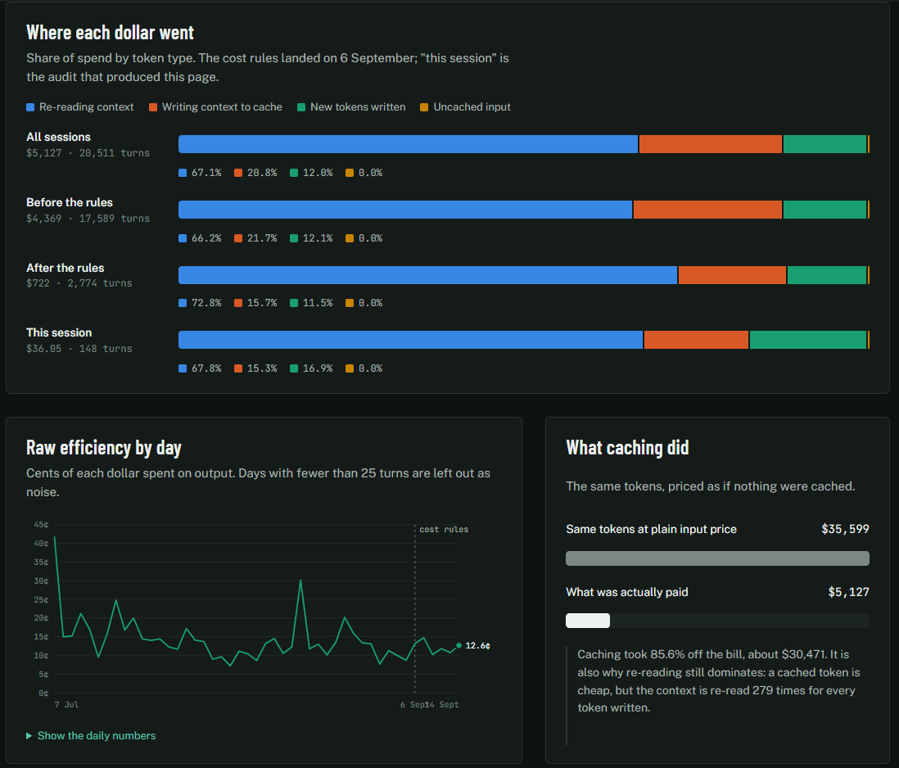

AI Transparency
VixForge is one developer, and I use AI to build these tools. This page says plainly what the AI does, what I do, and how much of it there is.
Who Writes What
- I write the core systems and decide what gets built and what ships.
- Claude writes the rest: editor windows and inspector UI, repetitive boilerplate, documentation and changelogs.
- Every change is tested well before it ever reaches you, in real Unity projects, and I build and publish every release myself.
The Tools
The AI is Claude, made by Anthropic, used through Claude Code. It works with a local copy of Unity's own C# source, the VRChat SDK and Blender's source code, so when it needs to know how something behaves it can read the real code instead of guessing. Written project rules and notes carry my conventions from one session to the next.
When It Gets Things Wrong
It does get things wrong. An audit of this site once found feature descriptions that the code did not back up, and they came down. Every claim about what a tool does is now checked against the code before it goes on the site. If you find something a tool does not actually do, tell me through Get Help Here and it gets fixed and noted in the changelog.
Effects Designed By Claude
A few shader effects started as Claude's design rather than mine. Claude specified, built and tuned them inside the VixForge code, and I reviewed, tested and shipped them.
Designed by Claude, shipped by me
These five live under SPECIAL EFFECTS in Latex Ultra, Toon, Clothing Pro and Fur Pro. Each one is built on data AudioLink provides, and the work of turning that data into something worth looking at was Claude's.
- Inner Cosmos. A raymarched volume with real depth, so the surface reads as a window onto a contained galaxy.
- Sonar. Works out where the music physically is in the room and sends a wave out from it across you.
- Chromatic Bloom. Lays the twelve notes across the material so a chord reads as a chord, not one lump of brightness.
- Note Swarm. Scatters ColorChord's per-note lights over you as drifting blobs that follow the harmony.
- Spectrum Ribbon. Draws the last second and a half of the track onto you as a moving readout.
Credit where it is owed elsewhere too: the Infinity Mirror was Ghostpaw's idea, and every one of these effects is built on AudioLink by llealloo, cnlohr, lox9973, pema99 and float3.
How Much AI Is Involved
Numbers from my own Claude Code logs, 7 July to 14 September 2026. They cover every project I use it on, not only the ones on this site.
| Project | Claude Code turns | Usage at list price |
|---|---|---|
| The avatar and world shaders (VixenWear) | 13,005 | $3,492 |
| Vixens Toolbox | 1,380 | $304 |
| Everything else | 6,126 | $1,331 |
| Total | 20,511 | $5,127 |
A turn is one step Claude takes, so a single job is usually many turns. I pay Anthropic a flat monthly subscription, so the dollar column is what the same usage would cost at their published prices, not what I paid. It is here to show the scale.
About 12 cents of each of those dollars went on Claude writing something new. The rest went on Claude re-reading the conversation, code and notes it already had open.


Both figures come straight from my own usage ledger. The rules marked on 6 September are the working rules I gave Claude that day to cut wasted steps.